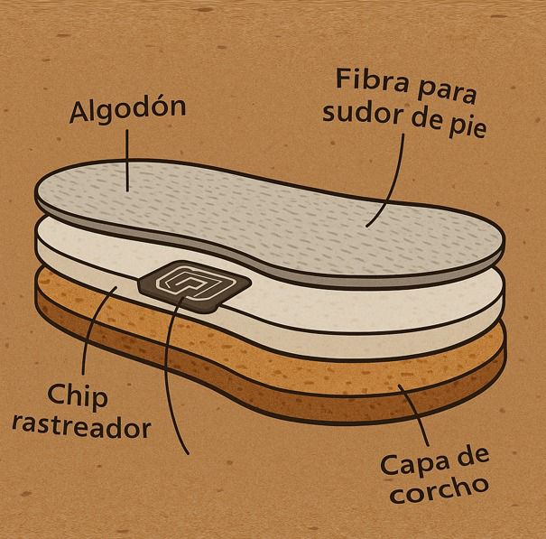

Descubre nuestras plantillas ecológicas especialmente diseñadas para el bienestar de los más pequeños. Fabricadas con corcho natural y algodón ecológico, estas plantillas son biodegradables, suaves con la piel y completamente libres de sustancias tóxicas. Su diseño ergonómico proporciona comodidad y soporte, mientras que sus materiales sostenibles cuidan tanto del planeta como de los pies en crecimiento de los niños. Una opción segura, saludable y responsable para acompañar cada paso. .
$358.00 MXN
